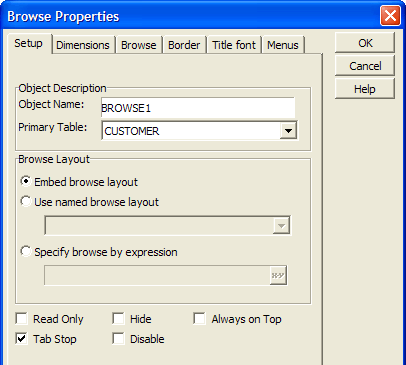
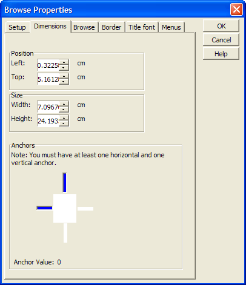
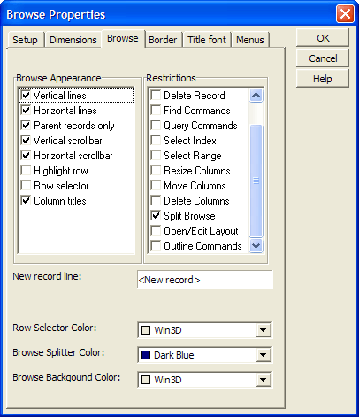
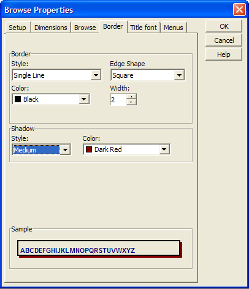
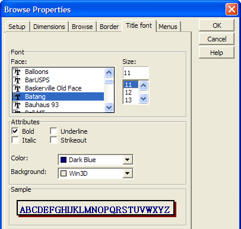
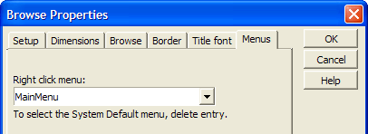

Embedded Browse Properties
The following Embedded Browse properties can be changed at run-time.
Filter and Order Properties
An embedded browse does not have its own filter and order properties. An embedded browse displays the records selected for the underlying table or set.
|
Item |
Description |
|
Object Name |
The name of the control. :formname.browsename.object.name as C |
|
Primary Table |
The primary table that the form is bound to. :formname.browsename.browse.source_db as C |
|
Embed browse layout |
Determines whether the embedded browse is part of the form or another existing browse is displayed. :formname.browsename.browse.style as C |
|
Use named browse layout |
The name of the existing browse that is being displayed on the form. :formname.browsename.browse.name as C |
|
Specify browse by expression |
An expression that selects fields to display in the browse. :formname.browsename.browse.condition_expression as C |
|
Read Only |
When checked prevents the user from modifying any data visible in the browse. :formname.browsename.browse.readonly as L |
|
Hide |
Displays or hides the embedded browse. :formname.browsename.Object.Visible |
|
Always on Top |
When checked the control is always on the top-most level of the form layout. No other form elements will over lap it. :formname.browsename.object.always_on_top as L |
|
Tab Stop |
Determines whether you can tab to the embedded browse. :formname.browsename.Object.Tabstop |
|
Disable |
Enables or disables the embedded browse. :formname.browsename.Object.Enabled |

|
Item |
Description |
|
Left |
Sets the horizontal position of the control. :formname.browsename.object.left as N |
|
Top |
Sets the vertical position of the control. :formname.browsename.object.top as N |
|
Width |
Sets the width of the control. :formname.browsename.object.width as N |
|
Height |
Sets the height of the control. :formname.browsename.object.height as N |
|
Anchor |
Determines the way the tabbed control will or will not stretch as the base form is resized. Possible attachment points are: 1 = top and right 2 = top, left, and right 4 = bottom and left 5 = bottom and right 6 = bottom, left, and right 8 = top, bottom, and left 9 = top, bottom, and right 10 = top, bottom, left, and right . :formname.browsename.object.anchor as N |

|
Item |
Description |
|
Browse Appearance |
Display horizontal scrollbar. :formname.browsename.Show_hscrollbar as L Display vertical scrollbar. :formname.browsename.Show_vscrollbar as L Display row selector. :formname.browsename.Showrowselector as L Display column titles. :formname.browsename.Showtitles as L Display horizontal gridlines. :formname.browsename.Gridline_horizontal as L Display vertical gridlines. :formname.browsename.Gridline_vertical as L Whether to highlight the current row. :formname.browsename.invert_whole_row as L Parent records only (display only the top level table in a set). :formname.browsename.outline_level as N |
|
Restrictions |
Enable or disable column delete. :formname.browsename.Restrict_column_delete as L Enable or disable column move. :formname.browsename.Restrict_column_move as L Enable or disable column resize. :formname.browsename.Restrict_column_resize as L Enable or disable splitting of the browse. :formname.browsename.Restrict_split as L Enable or disable the ability to change records. :formname.browsename.Restrict_change as L Enable or disable the ability to delete records. :formname.browsename.Restrict_delete as L Enable or disable the ability to add records. :formname.browsename.Restrict_enter as L Enables or disables functions under the Find menu. :formname.browsename.Restrict_find as L Enables or disables functions under the Query menu. :formname.browsename.Restrict_query as L E nables or disables select index. :formname.browsename.Restrict_index as L Enables or disables select range. :formname.browsename.Restrict_range as L Enables or disables editing of the browse layout. :formname.browsename.Restrict_editing as L Enables or disables outline commands. :formname.browsename.Restrict_outlining as L |
|
New Record Line |
The prompt that indicates that you can enter a new record. :formname.browsename.new_record_text as C |
|
Row Selector Color |
The background color of the row selector (using a color name or RGB value ). :formname.browsename.row_selector.backcolor as C |
|
Browse Splitter Color |
The color of the splitter (using a color name or RGB value ). :formname.browsename.splitter.backcolor as C |
|
Browse Background Color |
The background color of the browse (using a color name or RGB value ). :formname.browsename.background.backcolor as C |

|
Item |
Description |
|
Border Style |
Sets the border line style. :formname.browsename.border.style as C |
|
Border Color |
Sets the border line color (using a color name or RGB value ). :formname.browsename.border.color as C |
|
Border Edge Shape |
Sets the shape of the border. :formname.browsename.border.style as C |
|
Border Width |
The width of the border line in pixels. :formname.browsename.border.width as N |
|
Show Left, Right, Top, Bottom |
For edge shape "Square" determines which sides of the rectangle will display. For other edge shapes, determines which corners will be square or styled. :formname.browsename.border.has_bottom_edge as L :formname.browsename.border.has_left_edge as L :formname.browsename.border.has_right_edge as L :formname.browsename.border.has_top_edge as L |
|
Shadow Style |
Determines how much the shadow will be offset and its degree of shading. :formname.browsename.shadow.style as C |
|
Shadow Color |
Sets the shadow color (using a color name or RGB value ). :formname.browsename.shadow.color as C |
|
Background Style |
The fill color mode and translucency of the control's background. :formname.browsename.Background_style as C |
|
Fill |
The style and color(s) of the control's background. :formname.browsename.fill.backcolor as C :formname.browsename.fill.forecolor as C :formname.browsename.fill.style as C |

|
Item |
Description |
|
Column Titles |
Displays or hides the column titles. :formname.browsename.Title.Showtitles as L |
|
Font |
Determines the font of the column titles. :formname.browsename.Title.Font.Name as C |
|
Size |
Determines the point size of the column titles. :formname.browsename.Title.Font.Size as N |
|
Bold, Underline, Italic, Strikeout |
Sets the character styles of the column titles. :formname.browsename.Title.Font.Italic as L :formname.browsename.Title.Font.Bold as L :formname.browsename.Title.Font.Strikeout as L :formname.browsename.Title.Font.Underline as L |
|
Color |
Sets the color of the title font. See A5.COLOR_ENUM(). :formname.browsename.Title.Font.Color as C |
|
Background |
Sets the color of the background. See A5.COLOR_ENUM(). :formname.browsename.Title.Backcolor as C |

|
Item |
Description |
|
Column Titles |
Determines which right click menu to display. :formname.browsename.right_click_menu as C |

Other Properties
|
Item |
Description |
|
Row Height |
Sets the height a browse row. :formname.browsename.row_height as N |
See Also
Browse Functions and Methods, Embedded Browse Control
Supported By
Alpha Five Version 5 and Above